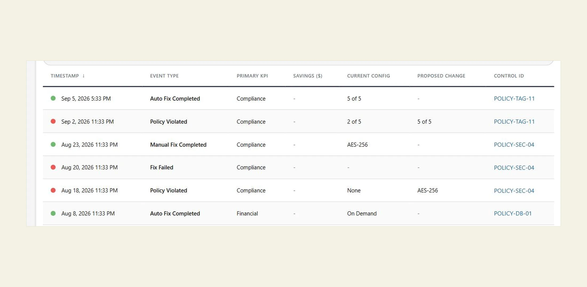
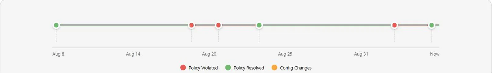
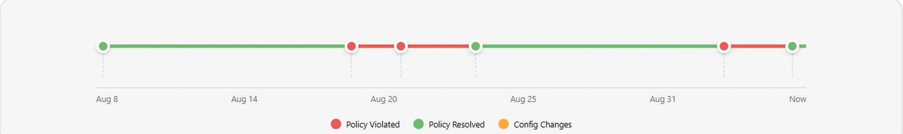

Capital One
Events Timeline
A resource's compliance history was a table of rows sorted by date, which is technically the whole story and practically unreadable. I designed the timeline that sits above it: a single track where you can see, at a glance, how long something has been in trouble and when it stopped being.
A table is a list of events, not a history
The events were all there, sorted by timestamp, each one accurate. But the question people actually had was never “what happened on the third of August”. It was “how long has this been broken”, and a table answers that only if you are willing to read it and do arithmetic.
A timeline answers it by being looked at. That is the whole argument for the feature: the data did not change, the shape of it did.

Violated here, fixed there. The gap between them is the answer, and the table makes you work it out.
Colouring the gaps
Events are discrete and compliance is continuous, and that mismatch is the whole engineering problem. A resource that was violated on the 3rd and fixed on the 8th generates two events and five days of nothing, and those five days are the part that matters most.
So state carries forward: the segment between two events is coloured by the state the earlier one left behind, not by the absence of data. Drawn the naive way, the track shows two dots and a gap, which reads as “nothing was wrong” for precisely the stretch when something was.


ExploredShippedWhen two things happen at once
Events cluster. An automated fix fires, fails, retries and succeeds, and at any sensible zoom those are four dots occupying the same pixel.
Adjacent same-day events collapse into one dot that opens a popover with all of them. The alternative was letting them overlap, which looks like a rendering bug, or spacing them evenly, which lies about when they happened. Collapsing keeps the position honest and moves the detail one interaction away, where there is room for it.
Making it work without a mouse
The first version of the dots and the sortable table headers were mouse-only. Everything worked, and none of it could be reached from a keyboard.
They take focus now, activate on Enter or Space, close on Escape, and announce themselves properly. I am putting this in a case study rather than quietly fixing it because the reason it shipped that way is worth saying out loud: it was built with a mouse in hand and never tested any other way. Nobody decided to exclude anyone. That is exactly how it usually happens.
The same data, now legible
The question the feature exists to answer, how long and is it fixed, went from a read-and-calculate to a glance. The table is still there underneath for the cases where you need the specifics.
It shipped in beta for feedback, which was the right call for something whose value is entirely in whether people read it the way it was meant to be read.
Shipped in beta · figures describe scope, not usage
Most-used control Timeframe filter